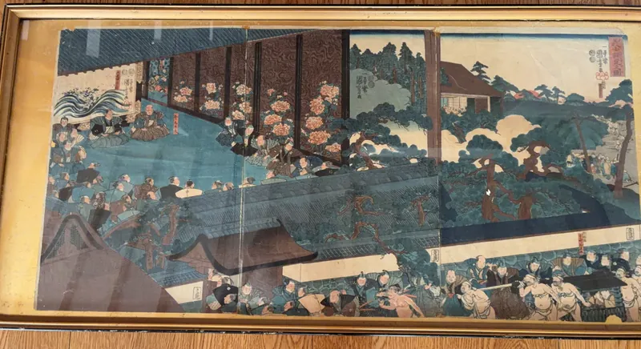
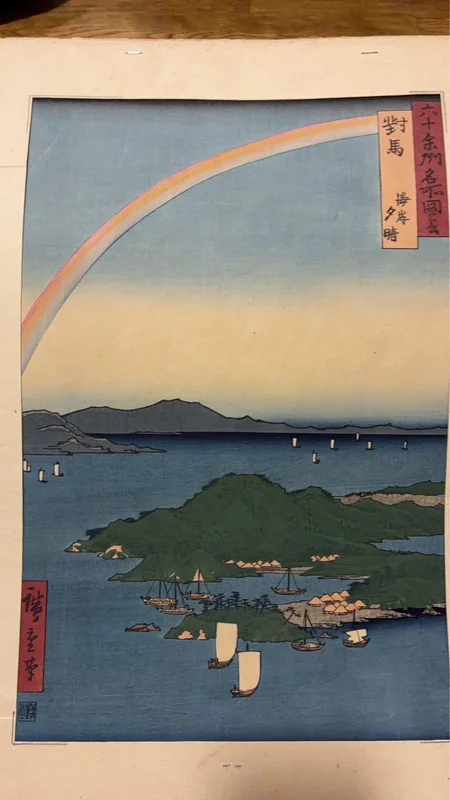
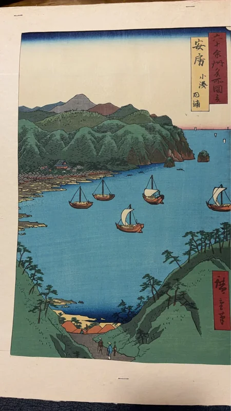

作者等確認中浮世絵 三枚続 相撲場面（額装）
江戸時代の浮世絵とみられる三枚続の作品です。御殿と庭園を背景に、多くの武士や相撲を取る人物が細密に描かれています。作者・作品名等は確認中です。
詳しく見るとぎつぎしゃ
時継舎で掲載している浮世絵や日本の古物を、 分野ごとに静かにご覧いただくためのページです。
現在は、歌川広重「六十余州名所図会」を含む浮世絵作品を中心に、 確認できている内容と確認中の事項を分けてご紹介しています。
トップへ戻る現在ご案内できる浮世絵作品を掲載します。確認中の事項は断定せず、分かる範囲でご紹介します。
現在ご案内中の品物
浮世絵作品を中心に一覧でご覧いただけます。
掲載準備中
掲載準備中
掲載準備中
掲載準備中
3件

作者等確認中江戸時代の浮世絵とみられる三枚続の作品です。御殿と庭園を背景に、多くの武士や相撲を取る人物が細密に描かれています。作者・作品名等は確認中です。
詳しく見る
詳細確認中歌川広重による「六十余州名所図会」シリーズの一図です。対馬の海岸に夕晴れの景を描いた作品としてご紹介します。真贋・摺りの時期・状態詳細は確認中です。
詳しく見る
詳細確認中歌川広重による「六十余州名所図会」シリーズの一図です。安房国小湊の内浦を描いた作品としてご紹介します。真贋・摺りの時期・状態詳細は確認中です。
詳しく見る